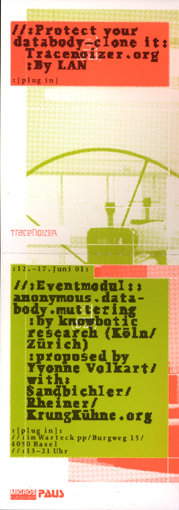

|
Soundtoys are new audio visual experiences; and this includes art toys, games, generative music, . At Home A 3-week residency program this May-June 2001 in Toronto, Canada 21 days of intensive interaction with inter . Beginning with a few different sequences, users can construct their own "movies" online and then save them to the site for others to incorporate as building blocks. Future versions will allow the uploading of new files as well. They are given 'kisekae ningyou' (dolls for changing clothes) and play changing clothes of the dolls. |
|  |
In this installation, visitors can activate the databodies of several ART Basel -participants, while these data streams in turn trigger acoustic and optical signals, and thus provide a spatial experience. Professional cloning assistance by TraceNoizer creators. TraceNoizer provides a tool, which enables the users to clone their databodies, multiply their userprofile and thus anonymize oneself online. (featuring LAN and knowbotic research) All databodies of the ART Basel participants get cloned and protected during the week of the Art Fair. . |